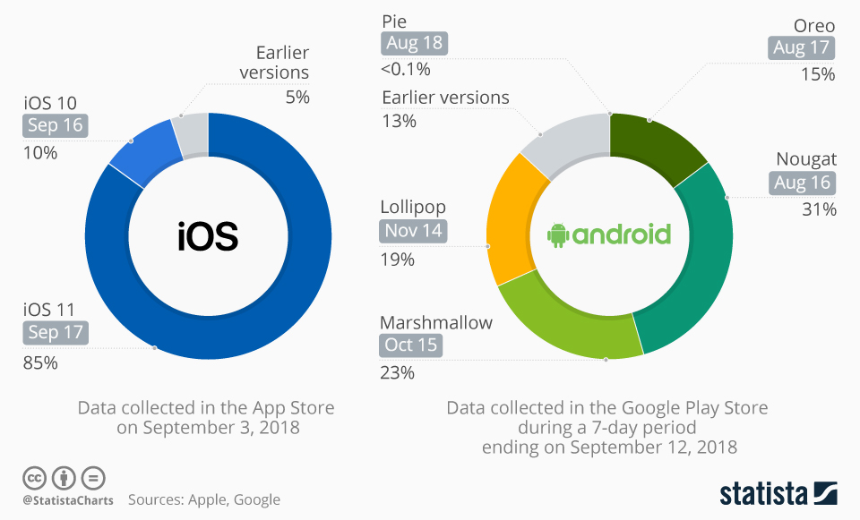
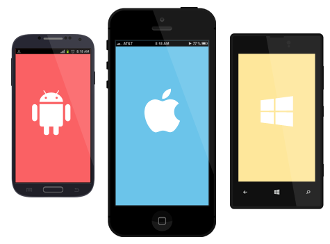
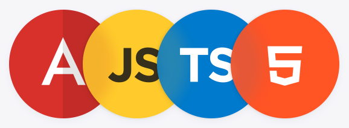
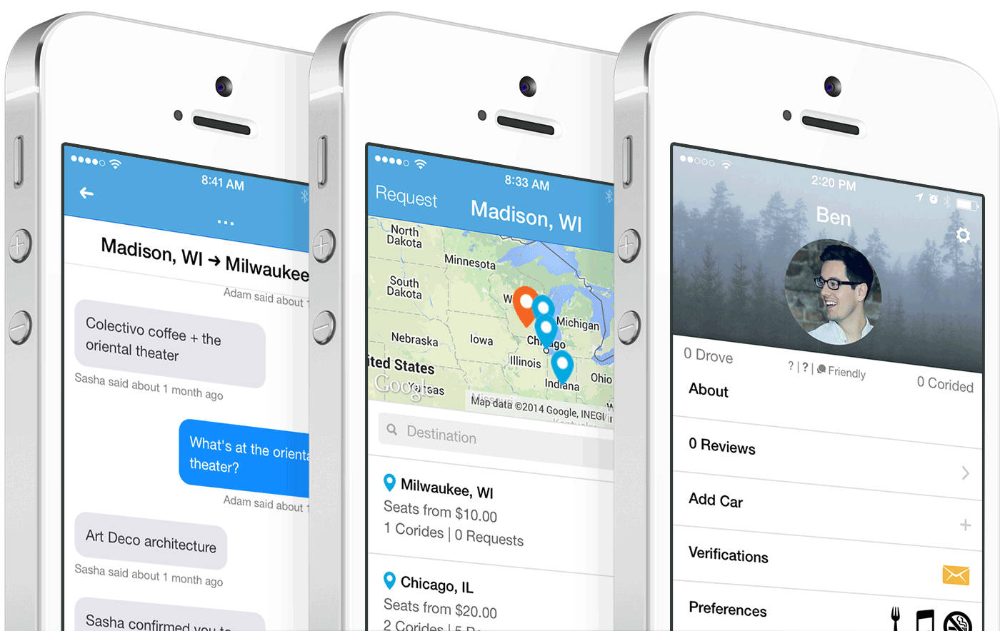
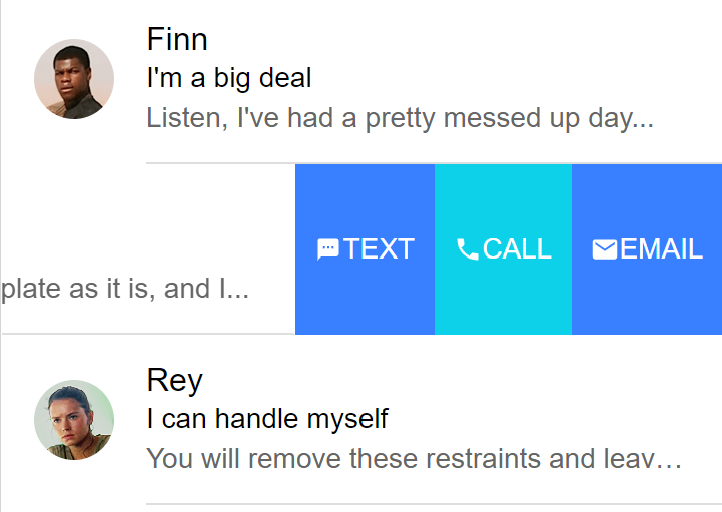
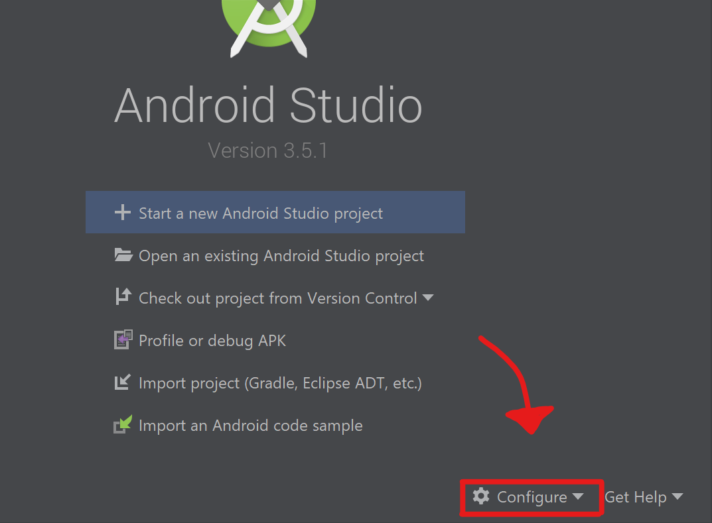

# Introduction Learn about [Ionic][ionic], an open source framework to build hybrid mobile applications based on [Cordova][cordova] and [Angular][angular]. **You will need** * [Node.js][node] 10+ * [Google Chrome][chrome] (recommended, any browser with developer tools will do) **Recommended reading** * [Angular](https://mediacomem.github.io/comem-masrad-dfa/latest/subjects/angular?home=https%3A%2F%2Fmediacomem.github.io%2Fcomem-devmobil%2Flatest) --- ## Which OS (and version) should your app support? .breadcrumbs[<a href="#1">Introduction</a>] <p class='center'></p> --- ## Hybrid mobile applications .breadcrumbs[<a href="#1">Introduction</a>] .grid-45[ Write your app with HTML, CSS and JavaScript, **like a website**: <img src='images/html-css-js.png' class='w100' /> ] .grid-10[ <p class='center' style='margin-top:150px;font-size:2em;'><i class='fa fa-arrow-right' aria-hidden='true'></i></p> ] .grid-45[ Embed it into a **native application**:  ] .container[ .grid-10[ <div class='center'> <i class='fa fa-camera x2' aria-hidden='true'></i> <br /> <i class='fa fa-location-arrow x2' aria-hidden='true'></i> <br /> <i class='fa fa-arrows-alt x2' aria-hidden='true'></i> </div> ] .grid-90[ Since you are writing a **web app**, you can access **web APIs** like the [geolocation API][geolocation-api]. You can also access **device hardware** like the **camera** or the **accelerometer**, and you can do it **in JavaScript**, with the help of dedicated plugins. ] ] --- ### Hybrid VS Native .breadcrumbs[<a href="#1">Introduction</a> > <a href="#3">Hybrid mobile applications</a>] There's a lot of talk around mobile application development and wether or not you should go the hybdrid way, or stick to the native development. _[Read](https://cdn2.hubspot.net/hubfs/3776657/Ionic%20eBook%20-%20Hybrid%20vs%20Native.pdf?utm_source=hs_automation&utm_medium=email&utm_content=60041551&_hsenc=p2ANqtz-8mI1bbQO8sbWgiIUWfi1RRmnzzqBAJm5p6pHYTW0-t1e6UMRbQAjFTlW77qlLCZkxParmZq0DfrkbiW9qEuTEpmKWFDk_Ns7RyfGVeXtMqnp8VxMM&_hsmi=60041551) [More](https://medium.com/@zwacky/hybrid-apps-are-slow-f3367d22e868) on the subject_ .grid-50[ <h4>Native Development</h4> **Pros** * Highest performances * No dependencies to third-parties (access all of the features offered by the native SDK) **Cons** * One codebase/release cycle/team per platform * Requires more resources, time and knowledge ] .grid-50[ <h4>Hybrid Development</h4> **Pros** * One codebase for all platforms (mobile and desktop alike) * Widely used and known technologies **Cons** * (Little) Less performant than native apps * Access to native device capabilities limited by plugins ] --- ### Apache Cordova .breadcrumbs[<a href="#1">Introduction</a> > <a href="#3">Hybrid mobile applications</a>] <p class='center'><img src='images/cordova.png' class='w35' /></p> > "[Cordova][cordova] wraps your **HTML/JavaScript app** into a **native container** which can **access the device functions** of several platforms. > These functions are exposed via a unified JavaScript API, > allowing you to easily write one set of code to target nearly every phone or tablet on the market today and publish to their app stores." --- #### Other options .breadcrumbs[<a href="#1">Introduction</a> > <a href="#3">Hybrid mobile applications</a> > <a href="#5">Apache Cordova</a>] Cordova is not the only system that allows developing hybrid (or hybrid-like) mobile applications. Here's a list of other technologies and why they were not chosen for this course: * [Microsoft Xamarin](https://dotnet.microsoft.com/apps/xamarin) - Uses .NET and C# for development * [Adobe PhoneGap](https://phonegap.com/) - This is a fork of Cordova * [Google Flutter](https://flutter.dev/) - Uses [Dart](https://dart.dev/) under the hood and is relativaly new * [Facebook React Native](https://facebook.github.io/react-native/) - Can only be used with React * And [others](https://medium.com/datadriveninvestor/hybrid-mobile-app-development-frameworks-for-2019-ac56b1e65f29)... --- ### What about Ionic? .breadcrumbs[<a href="#1">Introduction</a> > <a href="#3">Hybrid mobile applications</a>] .grid-35[ <img src='images/ionic.png' class='w100' style='margin-top:2em;' /> ] .grid-65[ > "Ionic Framework is the free, open source **mobile UI toolkit** for developing high-quality cross-platform apps for native iOS, Android, and the web—all from a single codebase." ] .container[ Ionic is basically **Cordova**, a JavaScript framework (**Angular**, **Vue**, **React**) and a set of **pre-made web components** plugged together: <div class='center'> <img src='images/cordova.png' height=200 />  </div> > Please note that we will be using **Angular** as the underlying framework in this course. ] --- #### A small word about Capacitor .breadcrumbs[<a href="#1">Introduction</a> > <a href="#3">Hybrid mobile applications</a> > <a href="#7">What about Ionic?</a>] <p class='center'></p> At the beginning of 2019, the Ionic team released [Capacitor][capacitor], a new multi-platform bridge that allows deploying the same applications on iOS, Android, Electron or the Web (juste like Cordova). It's intended to replace Cordova in Ionic applications (or any hybrid app, for that matter), in the long run. Currently, both Cordova and Capacitor are supported by the Ionic framework, but **Cordova is still the default bridge** used. **We will keep using Cordova for this course as Capacitor is still in its infancy.** > Whenever the choice between Capacitor and Cordova is given to you in tutorials or documentations, **follow instructions for Cordova**. --- #### What can I do with Ionic? .breadcrumbs[<a href="#1">Introduction</a> > <a href="#3">Hybrid mobile applications</a> > <a href="#7">What about Ionic?</a>] Ionic lets you build web apps that **look like native apps** with HTML, CSS and JavaScript: <p class='center'></p> --- class: center, middle, image-header ## Demo .breadcrumbs[<a href="#1">Introduction</a>] <p class='center'><img src='images/demo.jpg' /></p> --- ### Install Ionic .breadcrumbs[<a href="#1">Introduction</a> > <a href="#10">Demo</a>] Ionic provides you a **CLI tool** that you should install globally with the following command: ```bash $> npm install -g ionic ``` You're now ready to use Ionic. Let's generate an app called `ionic-tabs-demo` with the `tabs` starter template: ```bash $> cd /path/to/projects $> ionic start ionic-tabs-demo tabs ✔ Preparing directory ./ionic-tabs-demo - done! ✔ Downloading and extracting tabs starter - done! Installing dependencies may take several minutes. ... [INFO] Next Steps: `- Go to your newly created project: 'cd ./ionic-tabs-demo` `- Run 'ionic serve' within the app directory to see your app` - Build features and components: `https://ion.link/scaffolding-docs` - Get Ionic DevApp for easy device testing: https://ion.link/devapp ``` > Follow the first two infos to see your app in your browser. > You're also advised to take a look at [the third info's link](https://ion.link/scaffolding-docs) --- ### Starter templates .breadcrumbs[<a href="#1">Introduction</a> > <a href="#10">Demo</a>] There are other templates than `tabs`. For example, this will generate an application with a sliding side menu: ```bash $> cd /path/to/projects $> ionic start ionic-sidemenu-demo sidemenu ``` You can also start with a much simpler template. This will generate an app with just one page and a title, then it's up to you to define your basic layout: ```bash $> cd /path/to/projects $> ionic start ionic-blank-demo blank ``` You will find many Ionic app templates shared by the community in the [Ionic market][ionic-market]. --- class: center, middle ## Basics of Ionic .breadcrumbs[<a href="#1">Introduction</a>] --- ### Components .breadcrumbs[<a href="#1">Introduction</a> > <a href="#13">Basics of Ionic</a>] Ionic has many [UI components][ionic-components] you can use out of the box: .grid-65[ ```html <`ion-button`>Default</ion-button> <ion-button `color="secondary"`> Secondary </ion-button> ``` ] .grid-35[ <img src='images/ionic-button.png' /> ] .container[ .grid-65[ ```html <`ion-card`> <`ion-card-header`> <`ion-card-title`>Header</`ion-card-title`> <`ion-card-subtitle`>Sub</`ion-card-subtitle`> </`ion-card-header`> <`ion-card-content`> The British use the term "header", but the American term "head-shot" the English simply refuse to adopt. </`ion-card-content`> </`ion-card`> ``` ] .grid-35[ <img src='images/ionic-card.png' /> ] ] .container[ .grid-65[ ```html <`ion-range`> <`ion-icon` slot="start" name="remove"></`ion-icon`> <`ion-icon` slot="end" name="add"></`ion-icon`> </`ion-range`> ``` ] .grid-35[ <img src='images/ionic-range.png' /> ] ] --- ### Angular components .breadcrumbs[<a href="#1">Introduction</a> > <a href="#13">Basics of Ionic</a>] Many of these components are actually [**Angular components**][angular-components]. They not only look pretty, but they also bring **functionality**. Here's a code example for an Ionic list: ```html <ion-list> <ion-item-sliding `*ngFor='let person of people'`> <ion-item> <ion-avatar slot="start"> <img `[src]="person.avatarUrl"`> </ion-avatar> <ion-label> <h2>`{{ person.name }}`</h2> <h3>`{{ person.description }}`</h3> <p>`{{ person.lastMessage }}`</p> </ion-label> </ion-item> <ion-item-options> <ion-item-option>Favorite</ion-item-option> <ion-item-option color="danger">Share</ion-item-option> </ion-item-options> </ion-item-sliding> </ion-list> ``` --- #### List component functionality .breadcrumbs[<a href="#1">Introduction</a> > <a href="#13">Basics of Ionic</a> > <a href="#15">Angular components</a>] For example, the `ion-item-sliding` component automatically enables you to [slide in][ionic-sliding-list] controls from the side as most mobile applications do: .grid-65[ ```html <ion-item-options> <ion-item-option color="primary"> <ion-icon name="text"></ion-icon> Text </ion-item-option> <ion-item-option color="secondary"> <ion-icon name="call"></ion-icon> Call </ion-item-option> <ion-item-option color="primary"> <ion-icon name="mail"></ion-icon> Email </ion-item-option> </ion-item-options> ``` ] .grid-35[  ] --- ## Running apps on your mobile device .breadcrumbs[<a href="#1">Introduction</a>] There are several ways to run your Ionic application on a mobile device. This section will describe some of them: * Run with the **Ionic Dev App** (Android & iOS) * Run on an **iOS device** (Mac users only) * Run on an **Android device** Whatever's the method, you'll need to **install Cordova** and **configure your project to use it** with the following commands: ```bash $> cd /path/to/projects/my-app $> npm i -g cordova ``` If you want to deploy your app on an Android device ```bash $> ionic cordova prepare android ``` If you want to deploy your app on an iOS device ```bash $> ionic cordova prepare ios ``` --- ### Ionic Dev App .breadcrumbs[<a href="#1">Introduction</a> > <a href="#17">Running apps on your mobile device</a>] The [Ionic Dev App][ionic-dev-app] is an Android and iOS application in which your own app can run without having to be built and installed on your physically connected device. To use it, you must serve your app with the `--devapp` option: ```bash $> cd /path/to/projects/my-app $> ionic serve `--devapp` ``` If your phone is on the **same network as your computer**, the Dev App can connect to the mobile application running on your machine. It may find it automatically, or you may have to manually enter your computer's IP address on some networks. --- ### iOS device .breadcrumbs[<a href="#1">Introduction</a> > <a href="#17">Running apps on your mobile device</a>] > You can only run on an iOS device from a Mac, since you'll need to install and use Xcode, which is a Mac-only software. > > If you don't have a Mac but want to run your app on an iOS anyway, you'll have to try using the **Ionic Dev App** First, you'll need to prepare your Mac for deploying to a real or simulated iOS device, by following this instructions page: [iOS setup][ionic-ios-setup] Once you're done with those install and setup, you should be able to follow those insctructions: [Running on iOS][ionic-ios-run] --- ### Android device .breadcrumbs[<a href="#1">Introduction</a> > <a href="#17">Running apps on your mobile device</a>] > You can run your app on an Android device from either a Mac or a PC First, you'll need to prepare your computer for deploying to a real or simulated Android device, by following this instructions page: [Android setup][ionic-android-setup] > You'll need to create an Oracle account before being able to download the Java Development Kit (JDK) 8. > If you don't want to, you can download the JDK from open sources like [AdoptOpenJDK][adoptopenjdk] Once you're done with those install and setup, you should be able to follow those insctructions: [Running on Android][ionic-android-run] > After installing Android Studio, go to the next slide --- #### Android SDK .breadcrumbs[<a href="#1">Introduction</a> > <a href="#17">Running apps on your mobile device</a> > <a href="#20">Android device</a>] Now that you installed and finished configuring Android Studio, you should have installed the latest SDK version of Android (at the time of writing, that should be Android 10). This SDK version **might not be the same** as the device on which you plan to run your app. Check the Android version of your device by going to the **Settings**. There should be something like **About phone** then **Android version**, and keep track of the number. .grid-70[ Go to Android Studio and click on the **Configure** button, then select **SDK Manager**. In the **SDK Platforms** tab, tick the box next to the SDK matching your device version, and click on **Apply** to download and install it. ] .grid-30[  ] .container[ > You can now go back to the **Android Setup** for [Configuring Command Line Tools][configure-cli-tools] ] --- ## Resources .breadcrumbs[<a href="#1">Introduction</a>] **Documentation** * [Cordova requirements][cordova-requirements] * [Ionic][ionic-docs] * [Components][ionic-components] * [API Documentation][ionic-api-docs] [adoptopenjdk]: https://adoptopenjdk.net/index.html [angular]: https://angular.io [angular-components]: https://angular.io/guide/architecture#components [capacitor]: https://capacitor.ionicframework.com/ [chrome]: https://www.google.com/chrome/ [configure-cli-tools]: https://ionicframework.com/docs/installation/android#configuring-command-line-tools [cordova]: https://cordova.apache.org [cordova-requirements]: http://cordova.apache.org/docs/en/latest/guide/platforms/android/index.html [geolocation-api]: https://developer.mozilla.org/en-US/docs/Web/API/Geolocation/Using_geolocation [ionic]: http://ionicframework.com [ionic-api-docs]: https://ionicframework.com/docs/api/ [ionic-components]: https://ionicframework.com/docs/components/ [ionic-dev-app]: https://ionicframework.com/docs/appflow/devapp/ [ionic-docs]: https://ionicframework.com/docs/ [ionic-ios-setup]: https://ionicframework.com/docs/installation/ios [ionic-ios-run]: https://ionicframework.com/docs/building/ios [ionic-market]: https://market.ionicframework.com/ [ionic-sliding-list]: https://ionicframework.com/docs/api/item-sliding [node]: https://nodejs.org/en/ [ionic-android-setup]: https://ionicframework.com/docs/installation/android [ionic-android-run]: https://ionicframework.com/docs/building/android